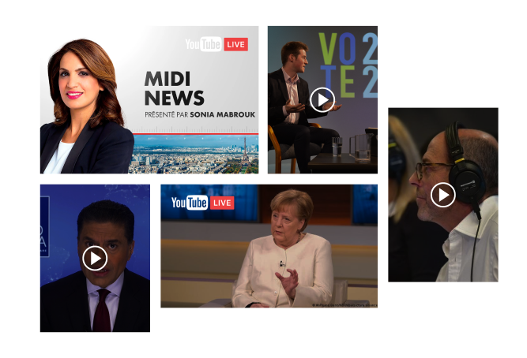

<div class="bloc" id="live">
  <div class="text">
    <h2 class="titre">
      Monétiser les Podcast et Replay
    </h2>
    
    <p>
      Les diffuseurs, éditeurs et producteurs peuvent monétiser leurs contenus 
      délinéarisés par une publicité décorrélée du moment et du flux média pour 
      éviter aux visiteurs des publicités intrusives et intempestives, insérées 
      dans les flux des Podcast et Replay. </p>
  </div>
  
</div>
